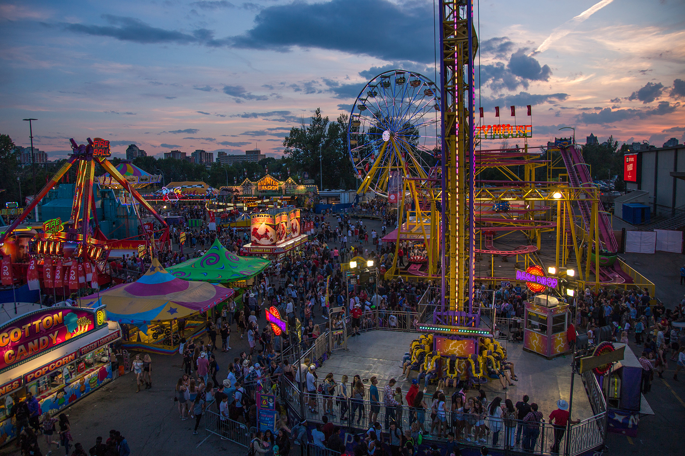
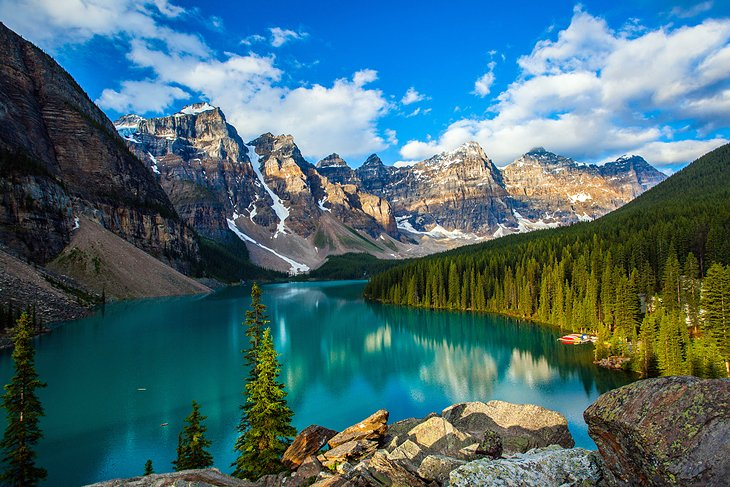

Calgary Stampede
 The Calgary Stampede is an annual rodeo, exhibition, and festival held every July in Calgary, Alberta, Canada. The ten-day event, which bills itself as "The Greatest Outdoor Show on Earth", attracts over one million visitors per year and features one of the world's largest rodeos, a parade, midway, stage shows, concerts, agricultural competitions, chuckwagon racing, and First Nations exhibitions. In 2008, the Calgary Stampede was inducted into the ProRodeo Hall of Fame.
The event's roots are traced to 1886 when the Calgary and District Agricultural Society held its first fair. In 1912, American promoter Guy Weadick organized his first rodeo and festival, known as the Stampede. He returned to Calgary in 1919 to organize the Victory Stampede in honour of soldiers returning from World War I. Weadick's festival became an annual event in 1923 when it merged with the Calgary Industrial Exhibition to create the Calgary Exhibition and Stampede.
Calgary's national and international identity is tied to the event. It is known as the "Stampede City", carries the informal nickname of "Cowtown", and the local Canadian Football League team is called the Stampeders. The city takes on a party atmosphere during Stampede: office buildings and storefronts are painted in cowboy themes, residents don western wear, and events held across the city include hundreds of pancake breakfasts and barbecues.
Banff Park
 Banff National Park (French: Parc national Banff) is Canada's oldest national park and was established in 1885. Located in the Rocky Mountains, 110–180 kilometres (68–112 mi) west of Calgary and 145 kilometres (90 mi) from Calgary International Airport in the province of Alberta, Banff encompasses 6,641 square kilometres (2,564 sq mi) of mountainous terrain, with many glaciers and ice fields, dense coniferous forest, and alpine landscapes. The Icefields Parkway extends from Lake Louise, connecting to Jasper National Park in the north. Provincial forests and Yoho National Park are neighbours to the west, while Kootenay National Park is located to the south and Kananaskis Country to the southeast. The main commercial centre of the park is the town of Banff, in the Bow River valley.
Banff National Park is the most visited Alberta tourist destination and one of the most visited national parks in North America, with more than three million tourists annually. Tourism in Banff contributes an estimated C$6 billion annually to the economy. A park pass is required for stopping in the park, and permit checks are common during the summer months, especially at Lake Louise and the start of the Icefields Parkway. A permit is not required if travelling straight through the park without stopping. Approximately 5 million people pass through Banff annually on the Trans-Canada Highway without stopping.
Whistler
 Whistler (Squamish language: Sḵwiḵw) is a resort municipality in the
southern Pacific Ranges of the Coast Mountains in the province of
British Columbia, Canada, approximately 125 km (78 mi) north of
Vancouver and 36 km (22 mi) south of the town of Pemberton.
Incorporated as the Resort Municipality of Whistler (RMOW), it has a
permanent population of approximately 11,854, plus a larger but
rotating population of seasonal workers, typically younger people
from beyond British Columbia, notably from United Kingdom, Australia
and Europe.
Whistler (Squamish language: Sḵwiḵw) is a resort municipality in the
southern Pacific Ranges of the Coast Mountains in the province of
British Columbia, Canada, approximately 125 km (78 mi) north of
Vancouver and 36 km (22 mi) south of the town of Pemberton.
Incorporated as the Resort Municipality of Whistler (RMOW), it has a
permanent population of approximately 11,854, plus a larger but
rotating population of seasonal workers, typically younger people
from beyond British Columbia, notably from United Kingdom, Australia
and Europe.
Over two million people visit Whistler annually, primarily for alpine skiing and snowboarding and, in summer, mountain biking at Whistler Blackcomb. Its pedestrian village has won numerous design awards and Whistler has been voted among the top destinations in North America by major ski magazines since the mid-1990s. During the 2010 Winter Olympics, Whistler hosted most of the alpine, Nordic, luge, skeleton, and bobsled events.